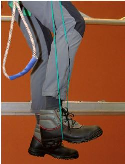
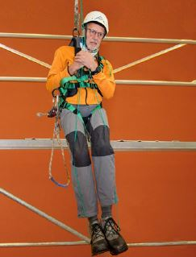
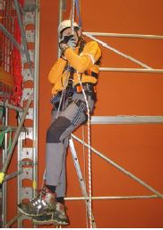
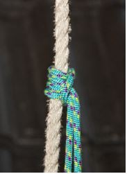
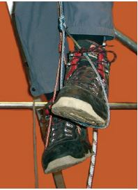

Grundsätzlich sollte die betroffene Person möglichst schnell aus der freihängenden Position befreit werden.
Solange eine Person noch handlungsfähig ist, kann sie unterschiedliche Maßnahmen ergreifen, um dem Blutstau in den Beinen entgegen zu wirken. Dazu ist es notwendig, dass die im Gurt hängende Person die Beine bewegt. Effektiver ist es, die Beine abzustützen und gegen einen Widerstand zu drücken. Hierfür sind Trittschlingen, z. B. ein Halteseil mit Längeneinstellvorrichtung oder eine Prusikschlinge geeignet. Damit kann sich die frei hängende Person entlasten, die "Muskelpumpe" kann in Gang gehalten und eine eventuelle Einschnürung im Oberschenkel gelöst werden.
 |
 |
Abb. 2 Entlastung durch Stemmen eines Fußes in eine Trittschlinge |
Abb. 3 Entlastung durch stemmen beider Füße in eine Trittschlinge |
Das Halteseil mit Längeneinstellvorrichtung wird dabei an den beiden seitlichen Halteösen des Auffanggurtes befestigt. Die Länge des Seiles ist so einzustellen, dass die im Seil hängende Person ihre Füße in die so entstandenen Seilschlaufen stemmt, um die Muskelpumpe zu betätigen.

Abb. 4 Anwendung der Prusikschlinge
Die Prusikschlinge, eine Reepschnur, wird mit dem Prusikknoten – einem lösbaren Klemmknoten – am Sicherungsseil befestigt. Die Länge der Prusikschlinge ist auf die Körpergröße abzustimmen, so dass sich die Person durch Hineintreten in die Schlinge entlasten kann. Die Anwendung der Prusikschlinge sollte vorher geübt werden.
Die Prusikschlinge wird bereits vor Arbeitsbeginn für den "Ernstfall" vorbereitet und leicht zugänglich und erreichbar – z. B. in einer Schutztasche am Auffanggurt – verstaut.

Abb. 5 Prusikknoten
Sollte kein Halteseil mit Längeneinstellvorrichtung oder keine Prusikschlinge zur Verfügung stehen, kann sich die frei im Seil hängende Person wechselweise jeweils mit einem Fuß fest auf den anderen Fuß treten. Dabei wird der untere Fuß kräftig mit den Zehen nach oben gezogen. Dies hält allerdings nur für eine sehr kurze Zeit (wenige Minuten) den Rückfluss des Blutes aus den unteren Extremitäten in Gang.

Abb. 6 Abwechselnde Be- und Entlastung der Füße in der Prusikschlinge